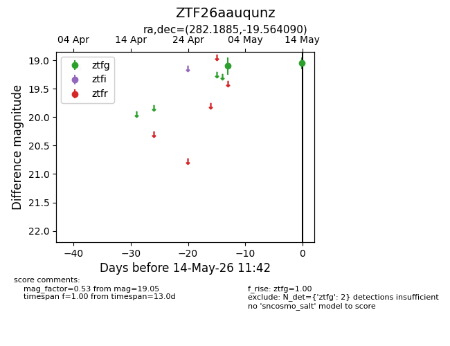
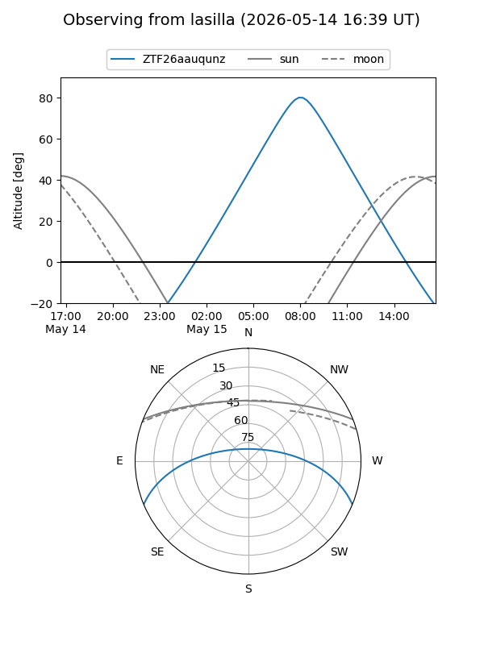
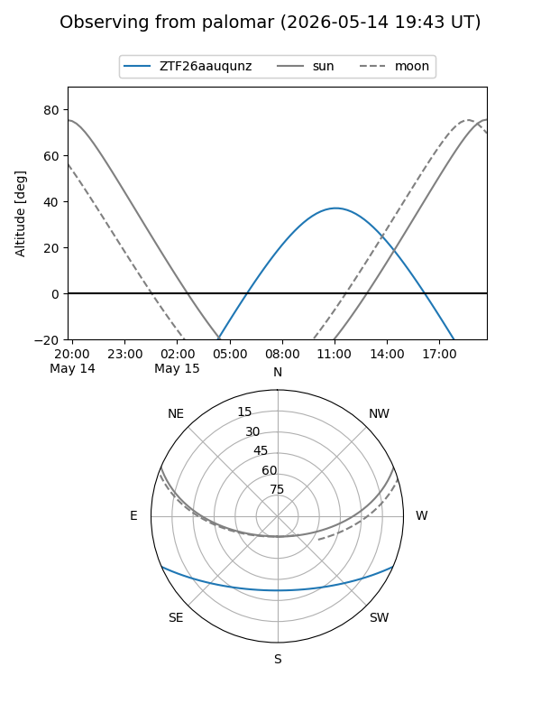
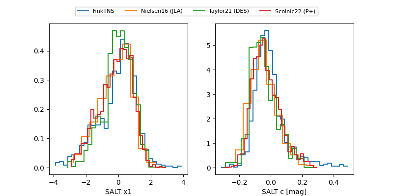

ZTF26aauqunz
Target ZTF26aauqunz at 2026-05-14 11:44
Aliases and brokers:
FINK: link
Lasair: link
ALeRCE: link
alt names
ZTF26aauqunz (ztf,fink_ztf)
Coordinates:
equatorial (ra, dec) = 282.1885,-19.56409
equatorial (HMS+DMS) = 18:48:45.24,-19:33:50.73
galactic (l, b) = (15.1019,-8.21400)
Flags:
Photometry:
last ztfg=19.05
2 ztfg detections
Lightcurve

Visibility


Additional plots
